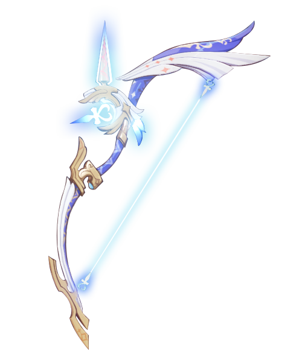
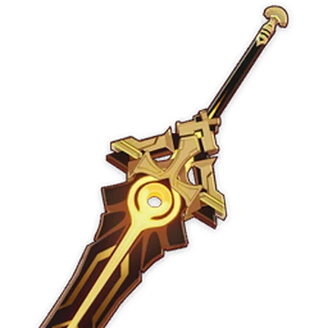
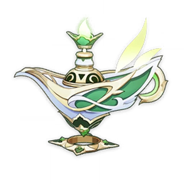

Amos' Bow
- Amos’ Bow
- Type of weapon: 5 Star Bow
- Level 90 Materials: Fetters of Dandelion Gladiator -5, Chains of Dandelion Gladiator -14, Shackles of Dandelion Gladiator -14, Dream of Dandelion Gladiator -6, Chaos Device -23, Chaos Circuit -27, Chaos Core -41, Slime Condensate -15, Slime Secretions -23, Slime Concentrate -27, Mora -225,000.
- Amos’ Bow Materials: Fetters of Dandelion Gladiator, Chains of Dandelion Gladiator,Shackles of Dandelion Gladiator and Dream of Dandelion Gladiator can be found in the Domain of Forgery on Wednesday, Saturday, and Sunday. Fetters of Dandelion Gladiator can be purchased while the only three can be crafted. Chaos Devices are dropped by Ruin Guards which are located in Mondstadt, Liyue and Inazuma and Ruin Hunters which are located in Liyue, Inazuma, and Enkanomiya. Chaos Circuit are dropped by level 40+ Ruin Guards, Ruin Hunters, and can be crafted. Chaos Core are dropped by level 60+ Ruin Guards, Ruin Hunters, and can be crafted. Slime Condensates are dropped by slimes which can be tracked down in the Adventurer Handbook. Slime Secretions are dropped by level 40+ slimes can be tracked down on the Adventurer Handbook. Slime Concentrate are dropped by level 60+ slimes and can be tracked down in the Adventurer Handbook. Slime Secretions and Slime Concentrate can both be crafted too.
- Recommended character should use this: Childe, Ganyu, Fischl

Beacon of the Reed Sea
- Beacon of the Reed Sea
- Type of weapon: Claymore
- Level 90 Materials: Faded Red Satin -15, Trimmed Red Silk -23, Rich Red Silk -27, Echo of Scorching Might -5, Remnant Glow of Scorching Might - 14, Dream of Scorching Might -14, Olden Days of Scorching Might -6, Desiccated Shell -23, Sturdy Shell -23, Marked Shell -41, Mora -225,000.
- Beacon of the Reed Sea Materials: Faded Red Satin are dropped by Eremites which are located in Sumeru. Trimmed Red Silk are dropped by level 40+ Eremites and can be crafted. Rich Red Silk is dropped by 60+ Eremites and can be crafted. Echo of Scorching Might, Remnant Glow of Scorching Might, Dream of Scorching Might, and Olden Days of Scorching Might are found in the Domain of Forgery on Wednesday, Saturday, and Sunday. Desiccated shells are dropped by Consecrated Beasts which are located in Sumeru and can be bought with stardust. Sturdy Shell are dropped by level 40+ Consecrated Beast, can be exchanged by using stardust, and can be crafted. Marked Shell are dropped by level 60+ Consecrated Beast and can be crafted.
- Recommended character should use this: Eula, Diluc, and Kinich

A Thousand Floating Dreams
- A Thousand Floating Dreams
- Type of weapon: Catalyst
- Level 90 Materials: Fungal Spores -15, Luminescent Pollen -23, Crystalline Cyst Dust -27, Oasis Garden’s Reminiscence -5, Oasis Garden’s Kindness -14, Oasis Garden’s Mourning -14, Oasis Garden’s Truth -6, Damaged Prism -23, Turbid Prism -27, Radiant Prism -41, and Mora -225,000
- A Thousand Floating Dreams Materials: Fungal Spores are dropped by Floating Fungi which can be tracked down in the Adventurers Handbook. Luminescent Pollen and Crystalline Cyst Dust are dropped by level 40+ Floating Fungi, can be crafted, and can be exchanged using stardust. Oasis Garden’s Reminiscence, Oasis Garden’s Kindness, Oasis Garden’s Mourning, and Oasis Garden’s Truth can be found in the Domain of Forgery on Tuesday, Friday, and Sunday.
- Recommended character should use this: Lisa, Sucrose and Mualani
